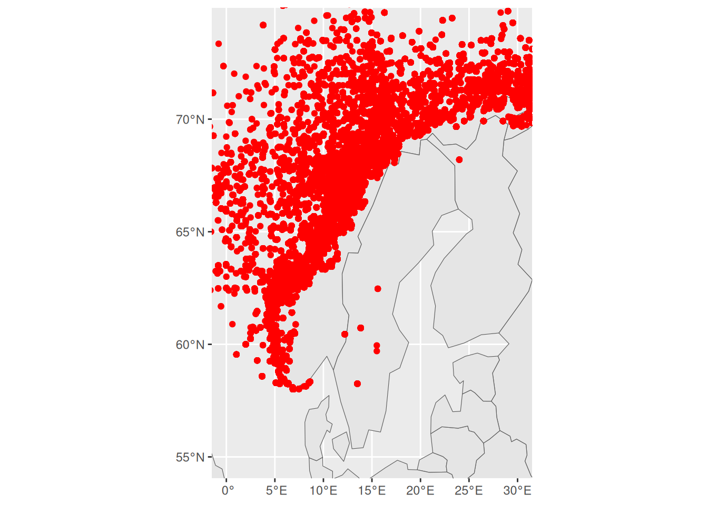
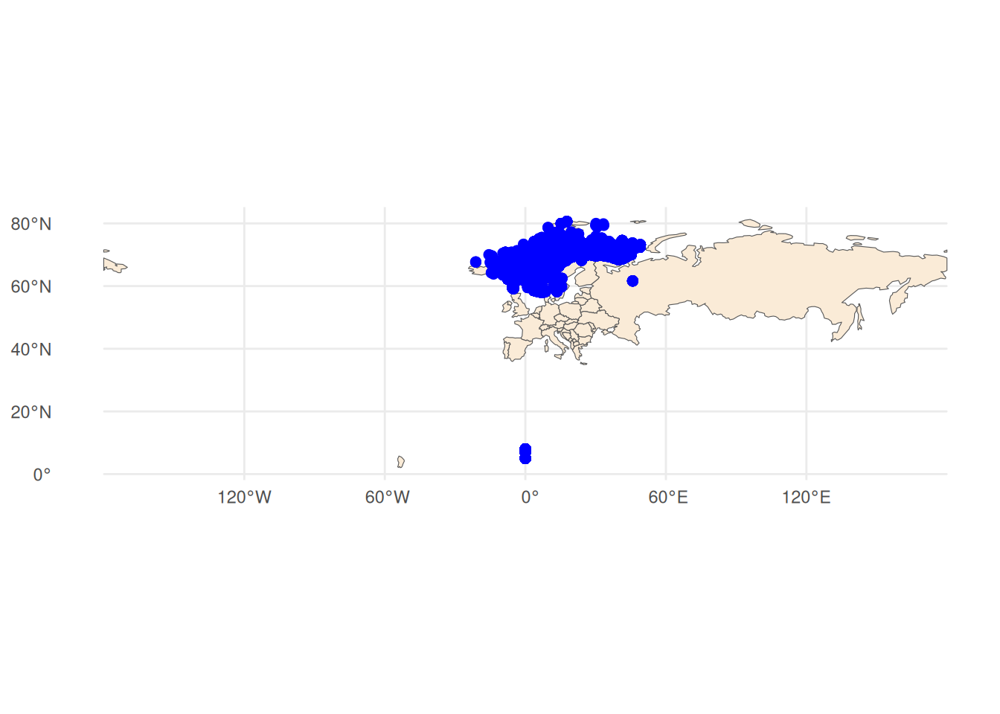
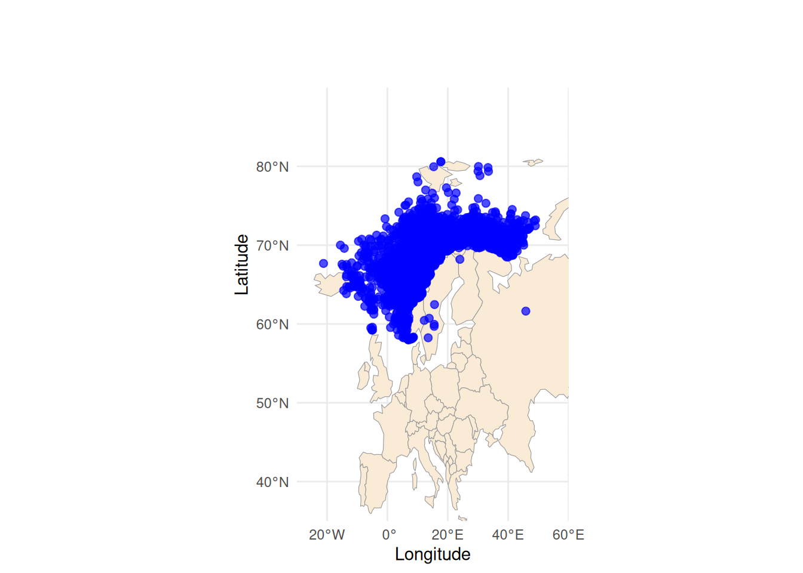
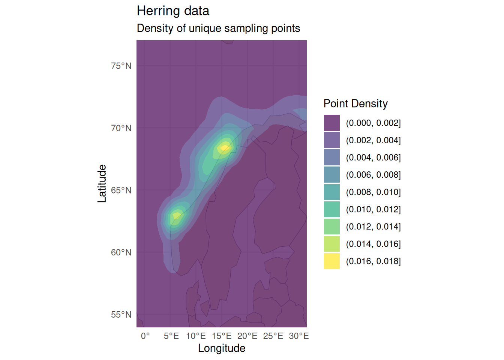

#install.packages(c("ggplot2", "dplyr", "maps", "stringr", "here"))Kladde kode for diverse figurer
library(ggplot2)
library(dplyr)
library(maps)
library(stringr)
library(here)
library(tidyverse)
herring_data_raw <- read_csv(
here("HerringData.csv")) #currently stored as chr
herring_data <- herring_data_raw |>
mutate(
lat = as.numeric(lat),
long = as.numeric(lon)
)
#herring_dataGeografisk fordeling. Plott posisjon (lengdegrad / breddegrad) til prøvene på #et kart. Her vil du nok se at det er mange fisk tatt på én posisjon. #Da trenger du bare plotte de unike posisjonene
unique_lat <- unique(herring_data$lat) #$ used to access a column of a data frame
#unique_lat
unique_lon <- unique(herring_data$lon)
#unique_lon#install.packages("prettymapr")
#install.packages("ggspatial")
#install.packages("rnaturalearth")
#install.packages("rnaturalearthdata")
#install.packages("maps")
library(ggplot2)
library(sf)
library(rnaturalearth)
library(rnaturalearthdata)
library(ggspatial)
library(prettymapr)
library(dplyr)
herring_data <- herring_data[!is.na(herring_data$lon) & !is.na(herring_data$lat), ]
aquaculture <- st_as_sf(herring_data, coords = c("lon", "lat"), crs = 4326)
# with rnaturalearth
europe <- ne_countries(continent = "Europe", returnclass = "sf")
ggplot() +
geom_sf(data = europe) +
geom_sf(data = aquaculture, colour = "red") +
coord_sf(xlim = c(0, 30), ylim = c(55, 74))
library(readr)
library(dplyr)
library(sf)
library(ggplot2)
library(prettymapr)
library(maps)
library(rnaturalearth)
library(rnaturalearthdata)
# get Europe boundaries as sf object
europe <- ne_countries(continent = "Europe", returnclass = "sf")
# plot Europe + your aquaculture data
ggplot() +
geom_sf(data = europe, fill = "antiquewhite") +
geom_sf(data = aquaculture, color = "blue", size = 2) +
theme_minimal()
library(readr)
library(dplyr)
library(sf)
library(ggplot2)
library(rnaturalearth)
library(rnaturalearthdata)
#Leser CSV filen
herring_data <- read_csv("HerringData.csv")
#Sørger for at lon og lat blir oppfattet som tall framfor tegn
herring_clean <- herring_data |>
mutate(
lon = as.numeric(lon),
lat = as.numeric(lat)
) |>
# Fjerner rader som mangler koordinater. !is.na() returnerer TRUE for gyldige rader
filter(!is.na(lon), !is.na(lat)) |>
# Passer på at unike rader er paret
distinct(lon, lat, .keep_all = TRUE)
# Konventerer "data frame" til "sf-objekt" for å behandle geografisk data
aquaculture <- st_as_sf(herring_clean, coords = c("lon", "lat"), crs = 4326)
# Bruker Europa som bakgrunnskart
europe <- ne_countries(continent = "Europe", returnclass = "sf")
# Plotter kartet med punkt størrelse 2, farget blått med transparens på 0.7
ggplot() +
geom_sf(data = europe, fill = "antiquewhite", color = "gray60") +
geom_sf(data = aquaculture, color = "blue", size = 2, alpha = 0.7) +
coord_sf(xlim = c(-30, 60), ylim = c(35, 100), expand = FALSE) +
theme_minimal() +
labs(x = "Longitude", y = "Latitude")
library(readr)
library(dplyr)
library(sf)
library(ggplot2)
library(rnaturalearth)
library(rnaturalearthdata)
# Leser CSV filen
herring_data <- read_csv("HerringData.csv")
# Sørger for at lon og lat blir oppfattet som tall framfor tegn
herring_clean <- herring_data |>
mutate(
lon = as.numeric(lon),
lat = as.numeric(lat)
) |>
# Fjerner rader som mangler koordinater. !is.na() returnerer TRUE for gyldige rader
filter(!is.na(lon), !is.na(lat)) |>
# Passer på at unike rader er paret
distinct(lon, lat, .keep_all = TRUE)
# Konventerer "data frame" til "sf-objekt" for å behandle geografisk data
aquaculture <- st_as_sf(herring_clean, coords = c("lon", "lat"), crs = 4326)
# Bruker Europa som bakgrunnskart
europe <- ne_countries(continent = "Europe", returnclass = "sf")
# Plotter kartet med punkt størrelse 2, farget blått med transparens på 0.7
ggplot() +
geom_sf(data = europe, fill = "antiquewhite", color = "gray60") +
geom_density_2d_filled(
data = st_coordinates(aquaculture) |>
as.data.frame(),
aes(X, Y),
alpha = 0.7
) +
coord_sf(xlim = c(0, 30), ylim = c(55, 76)) +
theme_minimal() +
labs(
title = "Herring data",
subtitle = "Density of unique sampling points",
x = "Longitude",
y = "Latitude",
fill = "Point Density"
)
read_lines(here("HerringData.csv"), n_max = 5)[1] "\"id\",\"year\",\"month\",\"serialno\",\"vesselcode\",\"gear\",\"lat\",\"lon\",\"area\",\"locality\",\"indno\",\"weight\",\"length\",\"sex\",\"maturity\",\"age\""
[2] "\"19354\",1935,1,4,.,4000,62.25,0.833333333,7,\"33\",1,340,35,.,4,13"
[3] "\"19356\",1935,1,6,.,4000,66.46666667,13.5,6,\"33\",1,170,29,.,3,5"
[4] "\"193516\",1935,1,16,.,4000,62.25,5,7,\"33\",2,170,29,.,4,5"
[5] "\"193516\",1935,1,16,.,4000,62.25,5,7,\"33\",3,180,30,.,3,5"